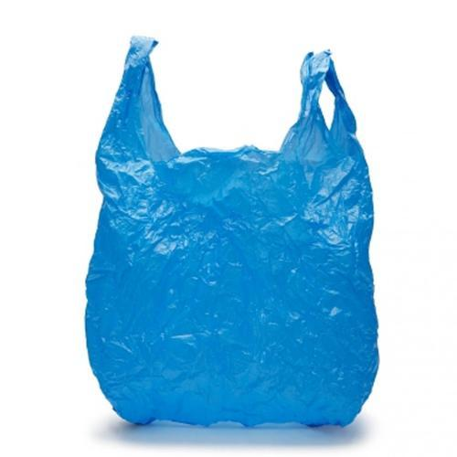
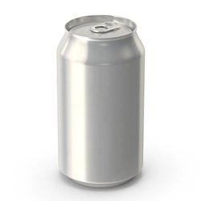
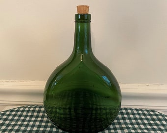
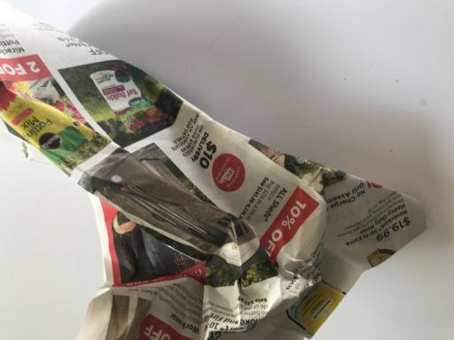
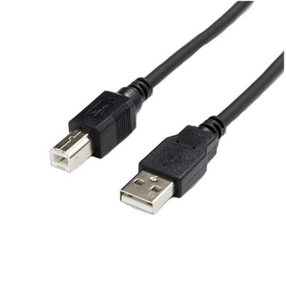
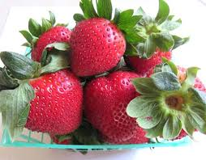

Try it
Drop a photo, paste one, or pick an example. The model runs inside your browser: the first use downloads it once (about 90 MB, then cached) and no photo is ever uploaded.
Drop a photo here
or click to choose · or paste from the clipboard
or click to choose · or paste from the clipboard






Model not loaded yet. It downloads when you pick or drop a photo, or .
Runs on CLIP ViT-B/32 exported to ONNX (Transformers.js) with the same 6-class head as the evaluation below. Quantised for the browser, so probabilities can differ by a few points from the Python version. A copy of the demo also lives on Hugging Face.